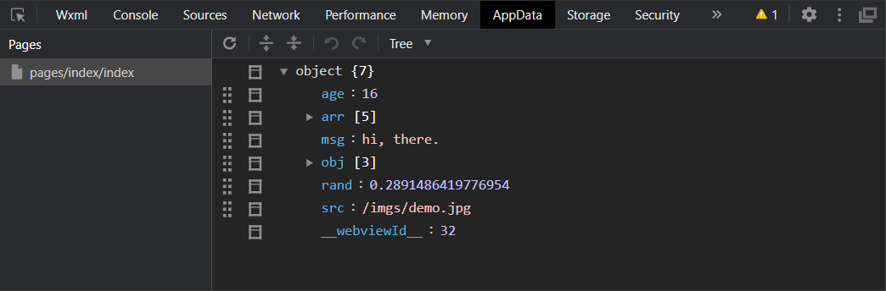

- 菜单栏
- 工具栏
- 云开发 - 新用户有一个月的免费使用；建议等熟悉了基本概念和操作后再开启
- 编译模式 - 首页预览或定制页面预览或者在app.json中指定入口页面entryPagePath
- 预览 - 一定要预览！一定要预览！！一定要预览！！！
- 真机调试 - 预览的同时，调试项目；同WiFi环境下，真机扫码预览，同时会打开调试窗口
- 清缓存 - 操作卡顿、反映迟缓、数据异常时，清除缓存可以改善开发体验、提高开发效率
- 上传 - 版本发布到微信公众平台供审核并等待发布
- 版本管理 - Git/GitHub
- 详情 - 小程序的各种信息；操作比较多的是：选择 → 不校验服务器
- 模拟器
- 小程序效果预览；高版本可以分离出去，通过置顶，改善开发体验
- 编辑器
- 开发区域
- 调试器
- Wxml、Console、Network、AppData、Storage；调试项目的利器，多多利用

调试器标签页
- 使用 CTRL + -/+ 可以快速缩放环境，调整大小